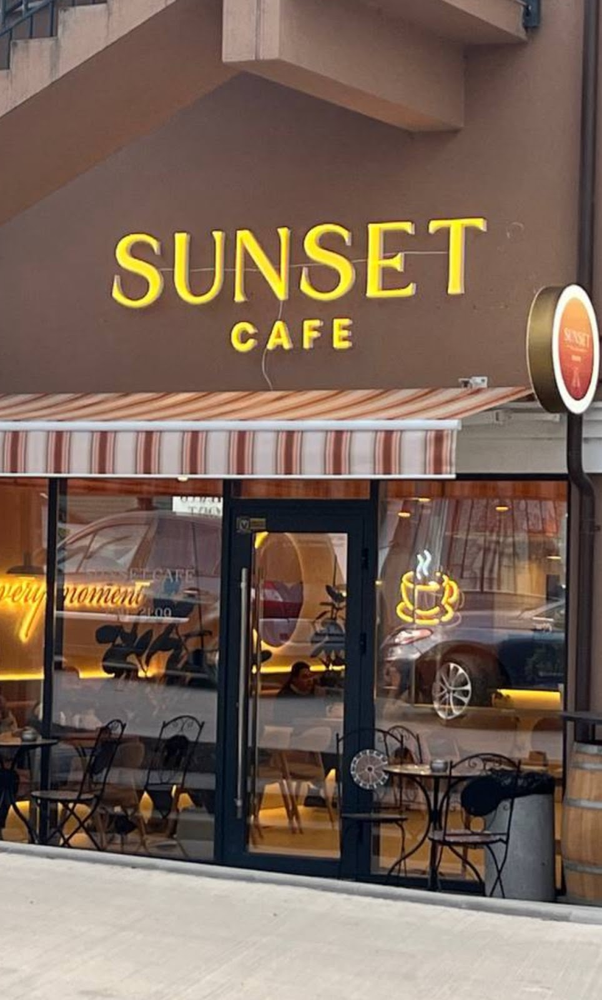

115 lei
Cafea · mic dejun · momente bune
Dimineți care merită savurate.
Cafeaua ta de cartier din inima Ialoveniului — un loc cald pentru mic dejun, conversații și pauze fără grabă.

Mai mult decât o cafea
Un loc mic, cu o stare de spirit mare.
La Sunset Cafe, ritmul încetinește. Vii pentru o cafea bună, rămâi pentru atmosfera caldă și revii pentru diminețile care încep exact cum trebuie.
01cafenea locală
06mic dejun toată ziua
∞atmosferă caldă
Din meniul real
Favorite pentru orice dimineață
125 lei
80 lei
Ritmul Sunset
Micul dejun nu are oră. Are poftă.
De aceea, la Sunset îl poți comanda pe tot parcursul zilei — de la omlete și shakshuka până la pancakes și papanași.
Alege-ți micul dejunCafeaua e mai bună când știi unde te așteaptă.
Bd. Alexandru cel Bun 57
Ialoveni, Republica Moldova
Luni–Duminică: 07:30–21:00
Program zilnic